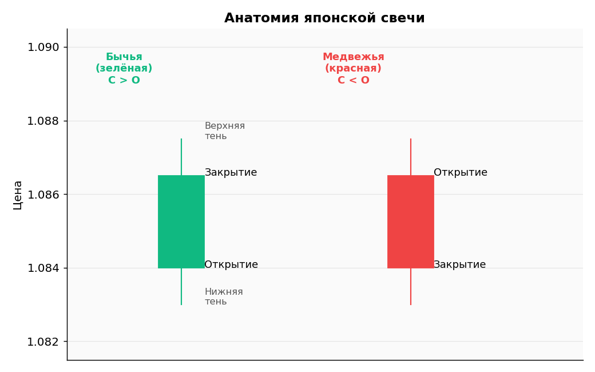
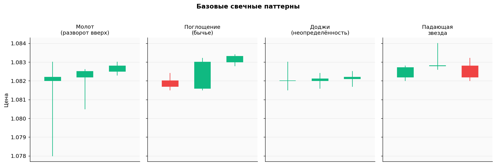
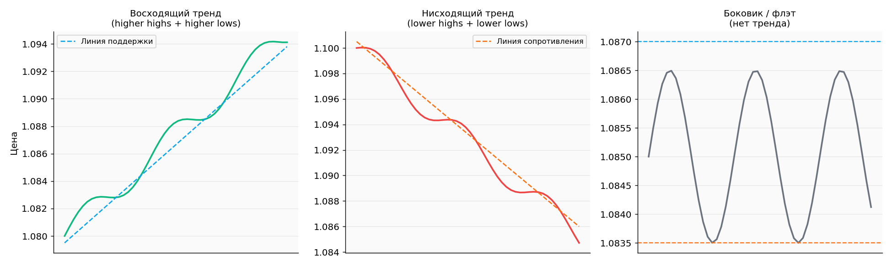
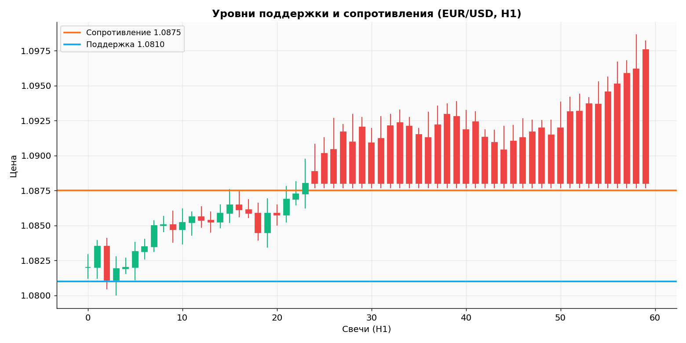
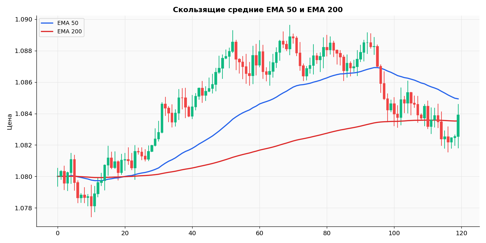
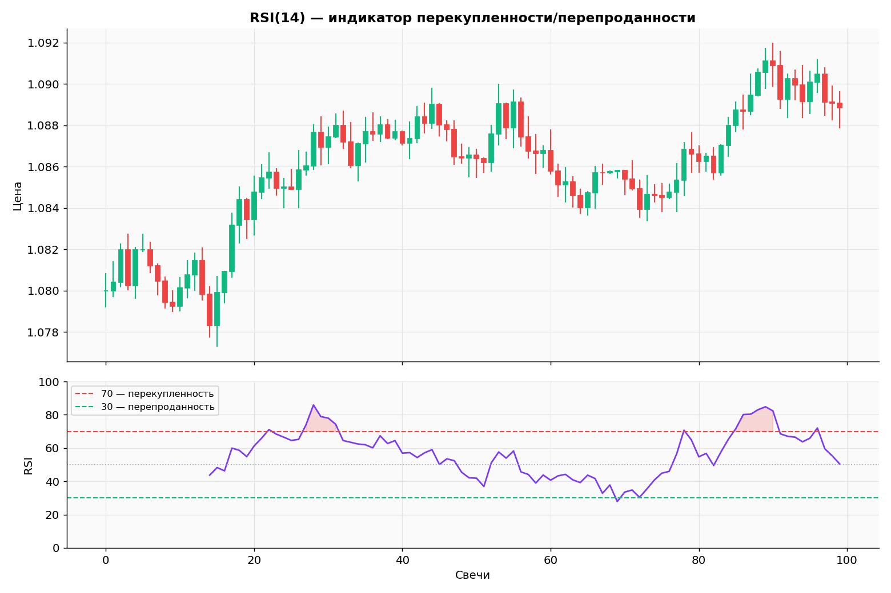
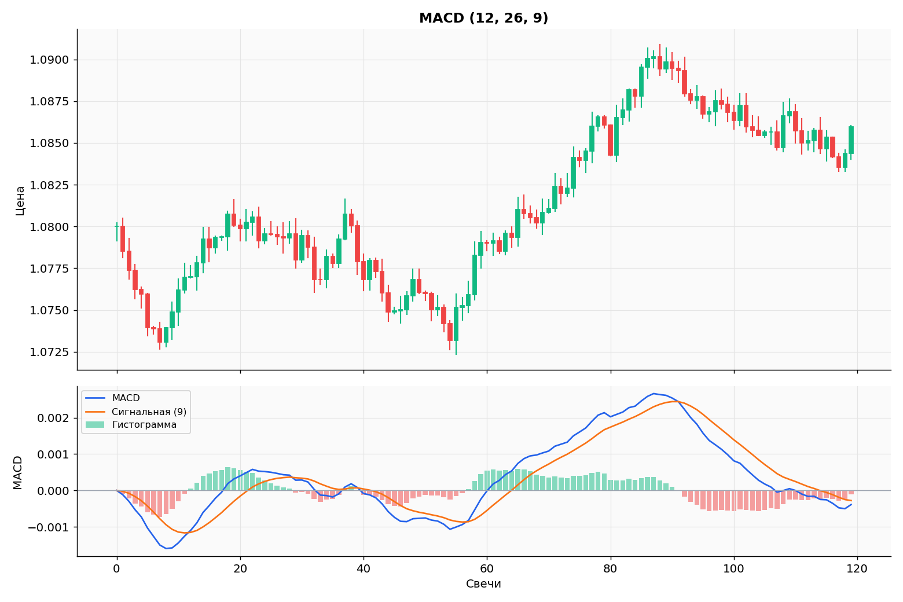
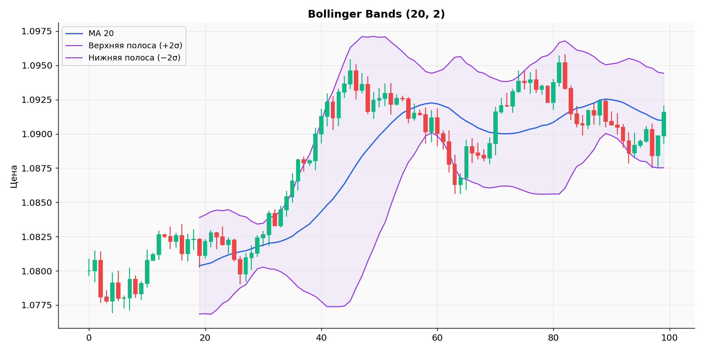
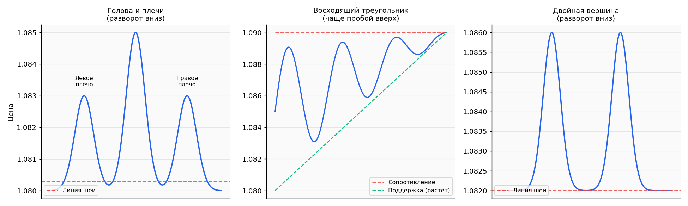

Technical Analysis — Advanced Guide¶
🌐 Translation
This is the English version of the page. The original is in Russian; switch languages using the language selector at the top of the page.
Educational material. All charts are synthetic data for illustrating concepts. These are not signals or forecasts for real markets.
Table of Contents¶
- The idea behind technical analysis
- Japanese candlesticks: anatomy
- Reversal candlestick patterns
- Trends
- Support and resistance
- Moving averages (MA / EMA)
- RSI — Relative Strength Index
- MACD
- Bollinger Bands
- Chart patterns
- Multi-timeframe analysis (MTF)
- How NOT to pile on indicators
- Chart analysis checklist
1. The idea behind technical analysis¶
Technical analysis (TA) is built on three postulates by Charles Dow:
- Price discounts everything — all news, reports, and emotions are already embedded in the current quote.
- Price moves in trends — the market is not random; it forms directional moves.
- History repeats itself — crowd behaviour patterns recur because human psychology has not changed in 100+ years.
You do not need to believe in TA as "magic." It is a language for describing what price is doing. A good trader uses TA as a map, not a crystal ball.
2. Japanese candlesticks: anatomy¶
A candlestick is a graphical representation of price for one period (M1, M5, H1, H4, D1…).

The four prices that form a candlestick — OHLC:
| Abbr. | What it means |
|---|---|
| O (Open) | Price at the start of the period |
| H (High) | Highest price during the period |
| L (Low) | Lowest price during the period |
| C (Close) | Price at the end of the period |
The body is the rectangle between Open and Close.
- If Close > Open — the candle is bullish (green/white).
- If Close < Open — the candle is bearish (red/black).
Wicks (shadows) — lines above and below the body, reaching up to High and down to Low. They show where price travelled but could not hold.
What to read from a candlestick¶
- Large body without wicks → strong move, one side in control
- Long lower wick + small body at the top → sellers pushed down but buyers brought price back → possible reversal upward
- Long upper wick + small body at the bottom → buyers failed to hold → possible reversal downward
- Small body, long wicks on both sides → indecision, a tug of war
3. Reversal candlestick patterns¶
Patterns work in context, not on their own. A hammer at the end of a downtrend at a support level is a signal. The same hammer in the middle of a range is noise.

Hammer¶
- Small body at the top, long lower wick (≥ 2× the body)
- Appears at the end of a downward move
- Buyers seized control
- Confirmation — the next bullish candle
Bullish Engulfing¶
- Small bearish candle followed by a large bullish candle whose body completely covers the previous candle's body
- Appears at the end of a downward move
- Strong signal of a sentiment shift
Doji¶
- Open ≈ Close, long wicks
- Indecision — bullish and bearish control are balanced
- A Doji at a key level after a prolonged trend is a common precursor to a reversal
- A Doji inside range noise — ignore it
Shooting Star¶
- Small body at the bottom, long upper wick
- Appears at the end of an upward move
- The mirror image of a Hammer, a signal of a reversal downward
Rules for using patterns¶
- Context matters more than shape. The pattern must be in the right place: at a level, after a trend.
- Wait for confirmation — the close of the next candle in the expected direction.
- The higher the timeframe, the more reliable the pattern. On M1 — noise. On H4/D1 — a serious signal.
- Never trade on a pattern alone — add indicators and context.
4. Trends¶
A trend is the direction of price over a period.

Uptrend¶
Sign: a sequence of higher highs (HH) and higher lows (HL) — each successive peak is higher than the previous one, and each successive trough is higher than the previous one.
Strategy: trade long only, enter on pullbacks to support (trendline, EMA).
Downtrend¶
Sign: lower highs (LH) and lower lows (LL) — each peak is lower, each trough is lower.
Strategy: trade short only, enter on pullbacks to resistance.
Sideways / Range¶
Sign: price moves in a horizontal corridor between levels.
Strategy: buy at support, sell at resistance. Dangerous for beginners — better to skip it.
The main rule of trends¶
The trend is your friend until it bends.
Do not try to "catch the bottom" in a downtrend — this is one of the main reasons beginners blow their accounts. Wait for a structural reversal, then enter.
How to identify a trend change¶
An uptrend is considered broken when price makes a lower low — a trough below the previous trough. The opposite applies to a downtrend.
5. Support and resistance¶
These are horizontal price levels that the market "remembers." Psychologically: at these prices there were many transactions in the past → many participants will react to them again.

- Support — a level from which price bounced UPWARD. Buyers are active.
- Resistance — a level from which price bounced DOWNWARD. Sellers are active.
How to find levels¶
- On the daily (D1) or 4-hour (H4) chart, find local highs and lows where price reversed at least 2 times.
- Draw a horizontal line through those points (or a zone, if the reversal was not perfectly precise).
- The more touches, the stronger the level.
The role-reversal principle¶
After a breakout, support becomes resistance, and vice versa.
If price breaks support at 1.0810 to the downside — 1.0810 will now act as resistance on any return.
How to trade from levels¶
Option 1: bounce (rebound) - Price approaches a strong level - On a lower timeframe — a reversal candlestick pattern - Entry with a small stop behind the level
Option 2: breakout - Price breaks the level with a strong candle (large body, high volume) - Wait for a retest — price returns to the level from below/above - Enter on the bounce off the retest in the direction of the breakout
6. Moving averages (MA / EMA)¶
A moving average is a smoothed price over the last N periods. It helps identify trends and levels.

Types of moving averages¶
- SMA (Simple Moving Average) — a simple average of closing prices. Reacts slowly.
- EMA (Exponential Moving Average) — an exponential average where the most recent candles carry more weight. Reacts faster. Used more often in trading.
Popular periods¶
| Period | What it shows |
|---|---|
| EMA 9 / 21 | Short-term trend, for scalping |
| EMA 50 | Medium-term trend, dynamic support/resistance |
| EMA 200 | Long-term trend. The main "filter": price above EMA200 = long bias, below = short bias |
How to use¶
1. Directional filter - Price > EMA200 → trade long only - Price < EMA200 → trade short only
2. Dynamic support/resistance - In an uptrend, price pulls back to EMA50 and bounces → entry point - In a downtrend — the opposite
3. Crossovers - Golden Cross: EMA50 crosses EMA200 from below → bullish signal - Death Cross: EMA50 crosses EMA200 from above → bearish signal
⚠️ Lag. Moving averages always trail price because they are calculated from past data. In fast markets, the signal arrives after the move. Do not use MAs as the only filter.
7. RSI — Relative Strength Index¶
RSI (Relative Strength Index) — an oscillator from 0 to 100. It shows how "overbought" or "oversold" price is.

Formula (simplified)¶
Standard period — 14.
Zones¶
| Value | Interpretation |
|---|---|
| RSI > 70 | Overbought — a pullback downward is possible |
| RSI 50–70 | Bullish pressure |
| RSI 30–50 | Bearish pressure |
| RSI < 30 | Oversold — a bounce upward is possible |
How NOT to use RSI¶
❌ "RSI > 70 — sell, RSI < 30 — buy" — in a strong trend, RSI can stay above 70 for weeks, and shorting it is a guaranteed loss.
How to use RSI correctly¶
1. Confirm an entry point on a pullback - In an uptrend, wait for a pullback - If RSI has dropped close to 40–45 and turned upward → momentum is recovering → possible entry
2. Divergence — a powerful signal - Bullish divergence: price makes a new low, RSI does not (its low is higher than the previous one). → selling is weakening, a reversal upward is possible. - Bearish divergence: price makes a new high, RSI does not. → buying is weakening, a reversal downward is possible.
Price: /\ /\
/ \ / \ ← new high (higher)
/ \/ \
\
RSI: /\
/ \ /\ ← LOWER than the previous high
/ \/ \ = bearish divergence
\
3. Overheating filter - Do not enter long if RSI > 75 (even if there is a signal) - Do not enter short if RSI < 25
8. MACD¶
MACD (Moving Average Convergence Divergence) — trend + momentum in one tool.

Components¶
Signals¶
1. MACD / Signal line crossover - MACD crosses the signal line from below upward → bullish signal - MACD crosses the signal line from above downward → bearish signal - Gives false signals in a strong range — filter with the trend
2. Zero-line crossover - MACD above 0 → bulls are in control - MACD below 0 → bears are in control - Crossing 0 from below upward = strengthening bullish trend
3. Divergence (same as RSI) - Price makes a new extreme, MACD does not → weakening, reversal possible
When MACD does not work¶
- On small timeframes (M1–M15) — too much noise
- In a ranging market — produces a series of false crossovers
- In strong trends it lags at entries
9. Bollinger Bands¶
Bollinger Bands — a volatility indicator. Three lines:

- Middle — SMA(20) — a standard moving average
- Upper = SMA(20) + 2 × standard deviation of price
- Lower = SMA(20) − 2 × standard deviation
Statistically, price is between the bands 95% of the time.
What the bands show¶
- Narrow bands (squeeze) — low volatility → an explosive move is coming (but direction is unknown!)
- Wide bands — high volatility → a return toward the middle is possible
- Touch of the upper band — relatively high price for the current range
- Touch of the lower band — relatively low price
Strategies with Bollinger Bands¶
1. Mean reversion — for ranging markets - Price touches the lower band → look for long - Price touches the upper band → look for short - Target — the middle line - Works ONLY in a range, will destroy you in a trend
2. Breakout from a squeeze - Bands are at their narrowest - Wait for a sharp candle that breaks through one of the bands - Enter in the direction of the breakout - Stop — behind the opposite band
3. "Walking the band" - Strong trend → price moves ALONG the upper (long) or lower (short) band - This is a sign of trend strength, not a reversal signal - A common beginner mistake: shorting because "price touched the upper band"
10. Chart patterns¶
These are shapes that price draws on a chart — the result of months of participant psychology.

Head & Shoulders¶
Reversal top pattern: - Left shoulder → pullback → head (higher) → pullback → right shoulder (roughly at the level of the left) - Neckline — support below the shoulders - Neckline break downward = short signal - Target = distance from the top of the head to the neckline, projected downward from the neckline
The mirror pattern — inverse head and shoulders (at the bottom, before a rise).
Double top / double bottom¶
Reversal: - Price attempts to break a level twice and fails - Double top = short signal after a neckline break - Double bottom = long signal
The greater the time between the two tops/bottoms, the stronger the pattern.
Triangles¶
Trend continuation: - Ascending triangle — horizontal resistance above, rising support below. Usually breaks upward. - Descending triangle — horizontal support, descending resistance. Usually breaks downward. - Symmetrical triangle — both sides converge. Breakout in either direction; direction cannot be predicted in advance.
Flag / pennant¶
Trend continuation: - Strong impulse → brief sideways/sloping consolidation → continuation in the direction of the impulse - The most "tradeable" intraday pattern
Important note about patterns¶
⚠️ Patterns are subjective. Five traders will see the same chart differently. Therefore:
- Confirm with a level breakout (do not trust a "forming" pattern)
- Place your stop behind the opposite side of the pattern
- Use the height of the pattern projected from the breakout point as your target
- Do not force the lines — if the pattern is not obvious, it probably does not exist
11. Multi-timeframe analysis (MTF)¶
The same chart looks different on M1, H1, and D1. Professionals analyse at least 3 timeframes.
Recommended combination for swing trading¶
| Timeframe | What we determine |
|---|---|
| D1 (daily) | Main trend, key support/resistance levels |
| H4 (4-hour) | Medium-term trend, working levels, EMA200 |
| H1 (hourly) | Entry point, candlestick pattern, EMA50 |
| ~~M5/M1~~ | Ignore as a beginner — noise, emotions |
Alignment rule¶
Only open a trade when all timeframes are saying the same thing.
Example long setup: - D1: uptrend (HH/HL) - H4: price above EMA200, pulled back to a support zone - H1: bullish pattern (hammer, engulfing) from EMA50
If D1 is in a downtrend and H1 is painting a "bullish reversal" — that is counter-trend and almost always a trap.
12. How NOT to pile on indicators¶
A common mistake: open a platform and slap on 7 indicators "for safety." This: - slows down decision-making, - creates an illusion of control, - produces contradictory signals (one says buy, another says sell — paralysis), - does not increase accuracy.
Minimum toolkit for a beginner¶
- Price + candles (always)
- EMA 50 and EMA 200 (trend and dynamic support)
- RSI(14) (overheating filter, divergences) OR MACD — pick one
- Horizontal support/resistance levels — draw them yourself
This is enough for at least a year of trading.
What to add (only after confidently mastering the basics)¶
- Fibonacci retracement — for identifying pullback targets (38.2%, 50%, 61.8%)
- Pivot Points — intraday levels
- Volume Profile — where the most liquidity was
- ATR — for volatility-based stop calculation
13. Chart analysis checklist¶
Before every trade, run through this list:
─── CONTEXT ───
☐ D1: what is the main trend? (up / down / range)
☐ Are key D1 levels nearby?
─── DIRECTION ───
☐ H4: is price above or below EMA200?
☐ Does H4 structure confirm the trend (HH/HL or LH/LL)?
─── ENTRY POINT ───
☐ H1: is there a pullback to dynamic support (EMA50)?
☐ H1: is there a candlestick pattern in the right direction?
☐ Is RSI not in an extreme zone?
─── EXECUTION ───
☐ Stop calculated and placed (behind swing / behind level)?
☐ Take-profit calculated, R:R ≥ 1:2?
☐ Position size = 0.5–1% risk?
─── NEWS FILTER ───
☐ No high-impact news in the next 2 hours?
☐ Not Friday evening (market is about to close)?
─── PSYCHOLOGY ───
☐ Am I calm, not "revenge trading"?
☐ Is this a rules-based trade, not a gut-feeling trade?
ALL ☐ CHECKED → trade can be opened.
EVEN ONE NO → NO trade.
Print this list and keep it by your computer for the first 6 months of trading.